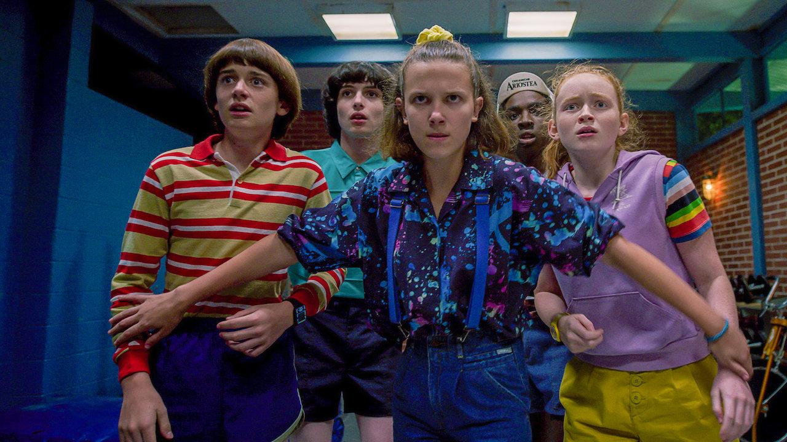

Características - Personagens
Principais ( Por Relevância )
==========================================================================

======================================================================
Resenha - 1ª Temp e 2ª Temp
(Com Imagens Representativas)
TELA INICIAL
PERSONAGENS / CARACTERÍSTICAS
RESUMO GERAL - 1 TEMP
RESENHA - 1ª Temp e 2ª Temp
EXTRA